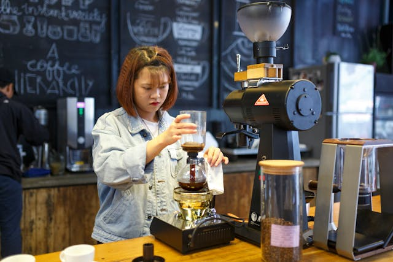

Bienvenidos a Yumaru
Descubre la mejor experiencia de cafetería con temática japonesa en un ambiente acogedor y elegante.
"Yumaru, tu oasis japonés en Mèrida. Aquí, cada taza de café y cada platillo son una celebración de la cultura japonesa. Te invitamos a disfrutar de una experiencia auténtica que combina la elegancia del Japón tradicional con la calidez de nuestro servicio."Sobre Nosotros

En Yumaru, nos apasiona ofrecerte una experiencia única con sabores auténticos y un ambiente inspirador. Ven y conoce más sobre nuestra historia y lo que nos motiva.